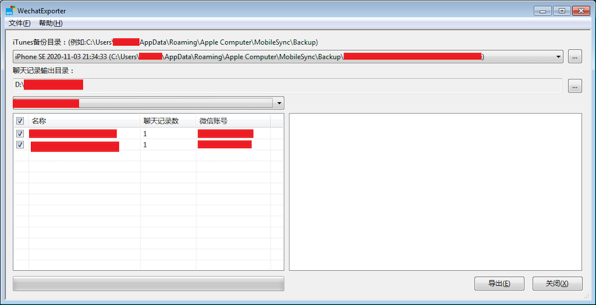
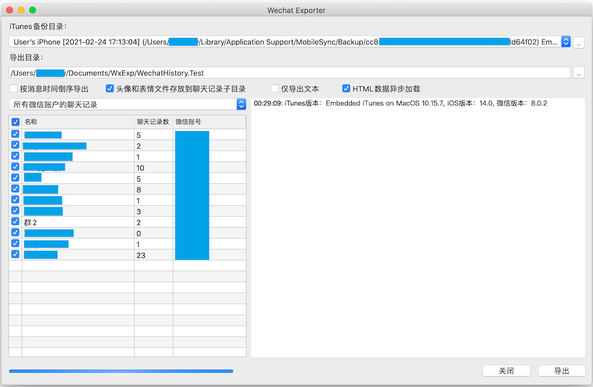

C++源码：https://github.com/BlueMatthew/WechatExporter
通过iTunes将手机备份到电脑上（建议备份前杀掉微信），Windows操作系统一般位于目录：C:\用户[用户名]\AppData\Roaming\Apple Computer\MobileSync\Backup\。Android手机可以找一个iPad/iPhone设备，把聊天记录迁移到iPad/iPhone设备上，然后通过iTunes备份到电脑上。
下载本代码的执行文件：Windows x64版本 或者 MacOS x64版本，然后解压压缩文件
执行解压出来的WechatExport.exe/WechatExporter (Windows下如果运行报缺少必须的dll文件，请安装Visual C++ 2017 redist后再尝试运行)
按界面提示进行操作。


解压目录下的res(MacOS版本位于Contents)子目录里存放了输出聊天记录的html页面模版，其中通过两个%包含起来的字符串，譬如，%%NAME%%，不要修改之外，其它页面内容和格式都可以自行调整。
Windows版本：Windows 7+, Visual C++ 2017 redist at The latest supported Visual C++ downloads
MacOS版本：MacOS 10.10(Yosemite)+
程序依赖如下第三方库：
- libxml2: http://www.xmlsoft.org/
- libcurl: https://curl.se/libcurl/
- libsqlite3: https://www.sqlite.org/index.html
- libprotobuf: https://github.com/protocolbuffers/protobuf
- libjsoncpp: https://github.com/open-source-parsers/jsoncpp
- lame: http://lame.sourceforge.net/
- silk: https://github.com/collects/silk (也参考了： https://github.com/kn007/silk-v3-decoder)
- libplist: https://github.com/libimobiledevice/libplist https://github.com/libimobiledevice-win32/libplist
- libiconv(windows only): https://www.gnu.org/software/libiconv/
- openssl(windows only)：https://github.com/openssl/openssl
- WTL (windows only)：https://sourceforge.net/projects/wtl/
MacOS下，libxml2,libcurl,libsqlite3直接使用了Xcode自带的库，其它第三方库需自行编译。
libmp3lame需手动删除文件include/libmp3lame.sym中的行：lame_init_old
Windows环境下，silk自带Visual Studio工程文件，可以直接利用Visual Studio编译，其余除了libplist之外，都通过vcpkg可以编译。libplist在vcpkg中也存在，但是在编译x64-windows-static target的时候报了错，于是直接通过Visual Studio建了工程进行编译。可以直接下载预编译好的静态库文件